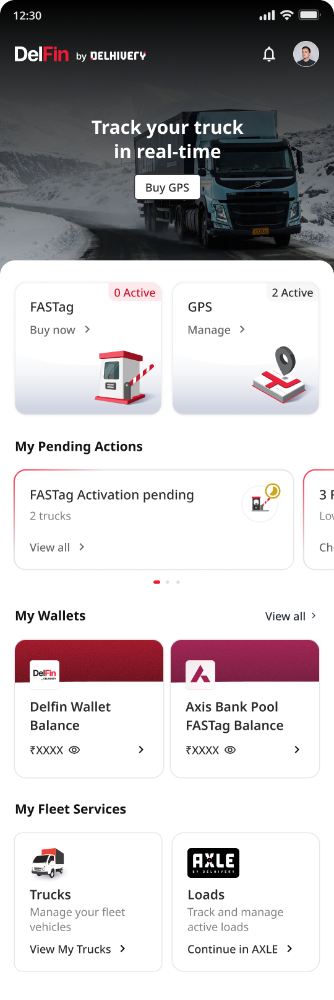
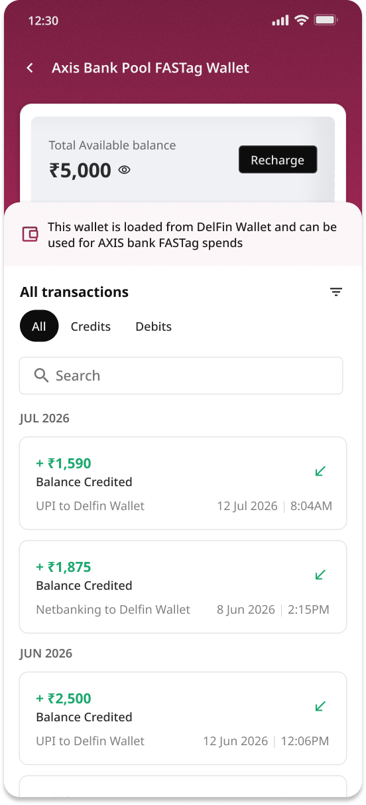
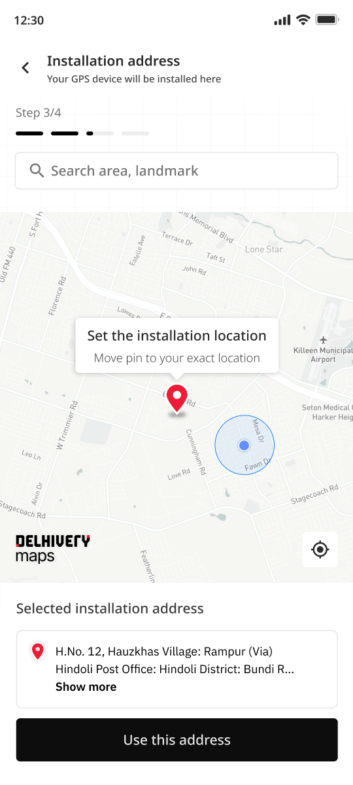
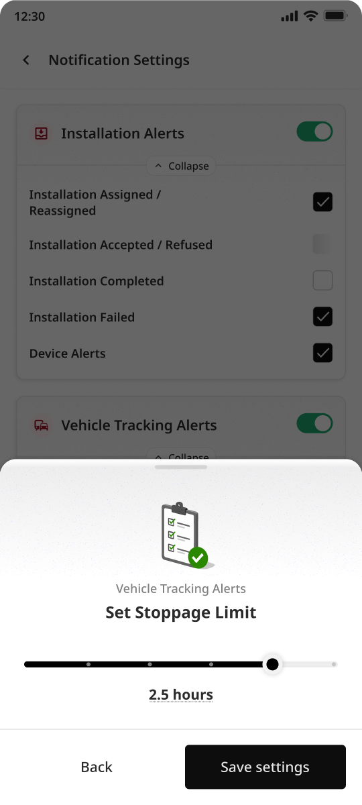
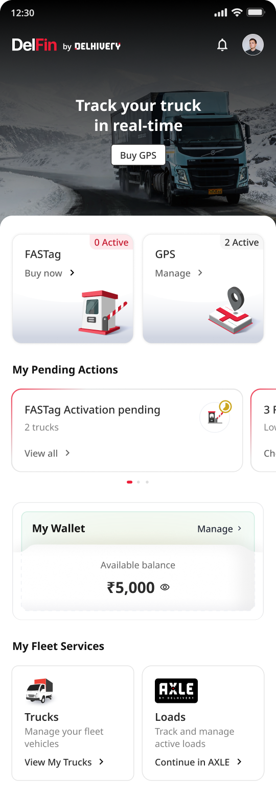

How we turned a business opportunity inside Delhivery's fleet ecosystem into a dedicated platform for FASTag, GPS and future financial services — designed and shipped from scratch in roughly eight weeks.




Turn Delhivery's fleet relationship into everyday financial & operational services — starting with FASTag.
Build a shared identity, vehicle and wallet layer so many services can ship on one foundation.
Hide bank, KYC and payment complexity behind one clear model: my vehicle, my balance, what's next.
FASTag + GPS launched on Android, with the platform set up to scale.
Fleet owners spend on tolls, fuel, tracking, insurance and financing every day. Delhivery already had the relationship — the opportunity was to extend it into a trusted service layer around those everyday needs.
To become a business, the product needed one shared layer — identity, vehicles, wallet — that every future service could reuse. FASTag proved the layer; GPS validated it.
A FASTag hides banks, KYC, wallets and NPCI rails. The user should only ever hold one model: my vehicle, my balance, what needs attention, what's next.
IDFC keeps a balance per FASTag; Axis pools many FASTags into one wallet. DelFin normalises both into a single FASTag experience — without asking owners to understand the difference.

The home surfaces what needs attention before anything to browse. Underneath, one wallet became reusable payment infrastructure for FASTag, GPS and the services to come.
FASTags needing attention, low balance, hotlisted, activation and GPS installation pending.
FASTag and GPS, with the DelFin wallet and bank-specific wallet always in reach.
Bank / UPI → DelFin Wallet → FASTag, GPS and future services — one reusable layer.
GPS added hardware, plan selection, an address, a technician and a physical install. Progress persisted across sessions so a multi-day order could resume — not restart.
Shared identity, vehicles and wallets are what make future services possible.
Banks can behave differently without pushing that complexity onto fleet owners.
A tight timeline meant prioritising critical journeys and validating continuously.
Early Play Store reviews after launch. Long-term metrics were still emerging.
"Super easy to use."
Play Store
"Simple, fast and easy to use."
Play Store
"Great app for truck owners."
Play Store
"Most user friendly FASTag app."
Play Store
"Good app for transport business and fleet owner."
Play Store